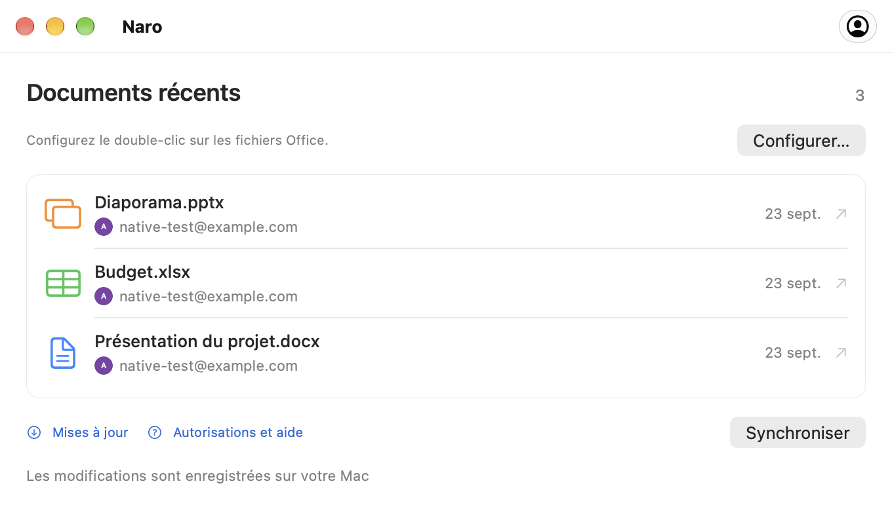

Connectez votre compte Google.
Connectez-vous via votre navigateur, puis faites de Naro l'application par défaut pour vos fichiers Office dans les paramètres de votre compte.
Fichiers Office, connectés sur macOS
Naro est une application macOS qui ouvre vos fichiers Word, Excel et PowerPoint dans Google Docs, Sheets et Slides, puis synchronise les modifications enregistrées sur votre Mac pendant que l'application est en cours d'exécution et en ligne.
Disponible pour Apple Silicon · macOS 26 ou version ultérieure
Moins d’étapes. Plus de fluidité.
Vos fichiers récents. Vos comptes Google. Un endroit familier pour reprendre là où vous vous êtes arrêté.
A y regarder de plus près
Un début familier
Votre double-clic habituel, avec les éditeurs de Google de l'autre côté.
Connectez-vous via votre navigateur, puis faites de Naro l'application par défaut pour vos fichiers Office dans les paramètres de votre compte.
Naro télécharge le fichier sur votre Google Drive et ouvre l'éditeur correspondant. Avec plusieurs comptes, choisissez d’abord un avatar.
Pendant que Naro est en cours d'exécution et en ligne, il vérifie les modifications enregistrées par Google et les réécrit localement, en conservant une sauvegarde.
Trois éditeurs. Une application.
Documents, feuilles de calcul et présentations. Jusqu'à 100 Mo par fichier.

D'un document local vers Google Docs.
DOC · DOCX
Ouvrez vos feuilles de calcul dans Google Sheets.
XLS · XLSX
Intégrez vos présentations dans Google Slides.
PPT · PPTXConnectez le compte Google que vous souhaitez utiliser pour vos documents. Naro utilise votre nom, votre adresse e-mail et votre photo de profil pour afficher les comptes connectés et vous aider à choisir le bon. Naro ne reçoit jamais votre mot de passe Google.
Lorsque vous ouvrez un fichier Office local avec Naro, il télécharge ce fichier sur votre Google Drive et ouvre l'éditeur de Google dans votre navigateur. L'accès au lecteur permet à Naro de récupérer les modifications enregistrées et de les synchroniser sur votre Mac. L'accès est limité aux fichiers créés par Naro ou explicitement partagés avec lui, et non à l'intégralité de votre Drive.
Les documents voyagent directement entre votre Mac et Google. Naro n'a pas de serveur exploité par un développeur qui reçoit vos documents. Les jetons de connexion restent dans le trousseau macOS.
Un peu d’aide au bon moment
Petits guides pour votre premier dossier,
votre prochain compte, et tout est synchronisé.
Premiers pas
Connectez Google, configurez l'ouverture à partir du Finder et transférez votre premier document dans le navigateur.
Comptes Google
Ajoutez un autre compte et choisissez où va chaque document avec le sélecteur d'avatar compact de Naro.
Enregistrement et synchronisation
Comprenez l'enregistrement local, les sauvegardes et ce qu'il faut faire lorsqu'un fichier est modifié à deux endroits.
Bon à savoir
Oui. Téléchargez Naro à partir des versions GitHub, ou installez-le avec Homebrew :
brew install --cask plexideas/tap/naro. Le téléchargement n'a pas de signature Apple Developer ID, donc macOS peut vous demander d'autoriser explicitement le premier lancement.
La modification s'effectue dans Google Docs, Sheets ou Slides dans votre navigateur. Naro gère l'ouverture des fichiers à partir du Finder, le choix d'un compte et le retour des modifications enregistrées par Google sur votre Mac.
Naro conserve les deux versions et demande laquelle continuer. Il effectue également des sauvegardes locales avant de remplacer un document. Gardez Naro en marche et connecté à Internet pour la synchronisation.
La compatibilité dépend des éditeurs Office de Google. Les formats complexes, les macros et autres fonctionnalités avancées peuvent ne pas être conservés. Si Google met à niveau un ancien fichier DOC, XLS ou PPT, Naro enregistre une copie au format moderne à côté de l'original. La conversion d'un fichier en un document Google natif distinct n'est pas suivie par le lien du fichier d'origine.
Naro prend en charge les Mac Apple Silicon exécutant macOS 26 ou version ultérieure. L'application peut vérifier les mises à jour des versions GitHub. Vous choisissez quand télécharger, installer et redémarrer à partir de la fenêtre de mise à jour.